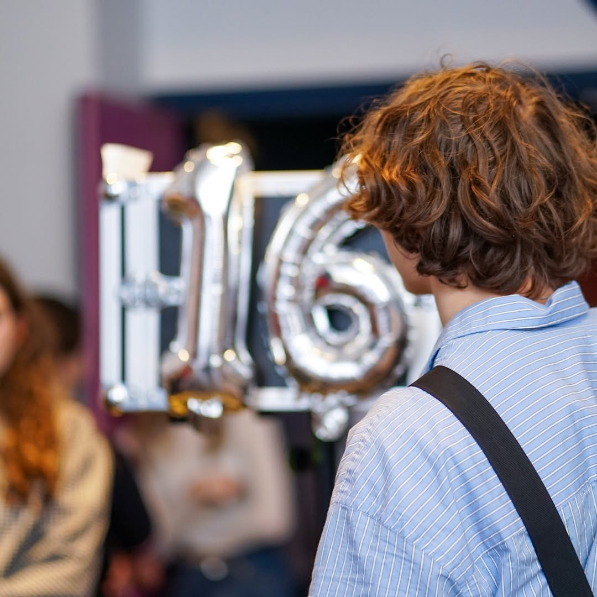

Au delà du vide
Contexte : Réalisation d'un court-métrage avec contrainte de l'arlésienne.
Tout juste sortie d'un BUT Métiers du Multimédia et de l'Internet, en parcours Création Numérique, je cherche à accompagner les organisations dans leur transformation digitale[cite: 7].
De la stratégie de communication à la mise en place de projets, en passant par la réalisation vidéo, je mobilise mes compétences pluridisciplinaires pour créer des expériences de marque cohérentes et percutantes[cite: 8].
Contexte : Réalisation d'un court-métrage avec contrainte de l'arlésienne.

Organisation d'un Festival audiovisuel MMI.